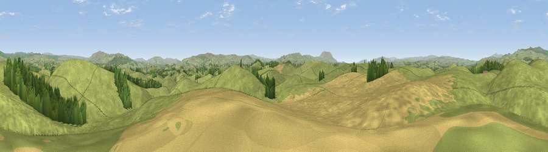

Viewpoint near Coniston Cold
#13003 in England · top 22% of its area beats it · near Coniston ColdWhere it is
The exact computed spot (SD 88375 53725). Click the marker for map links.
The view, rendered

A 360° render of this exact spot computed from the terrain model, tree cover and land cover — summer colours, afternoon light, calibrated against photographs of famous viewpoints. Real trees, hedges and buildings will differ in detail.
The panorama
Grey silhouette: terrain skyline in each direction (720 bearings, Earth curvature and refraction included). Dashed green: skyline with trees (+15 m) and buildings (+8 m) as obstacles. Blue strip: how far the ground is visible on each bearing.
Where the view opens
Wedge length = distance to the farthest visible ground on that bearing (vegetation-aware). Rings at 10, 25 and 50 km.
What fills the view
80% grassland · 14% cropland · 6% woodland
Angular shares of the visible panorama (visual magnitude), not map area. Landscape diversity 0.28 (0–1 Shannon).
Key numbers
More beautiful places nearby
The staircase of upgrades: each row has a higher view potential than everything closer. Driving times are estimates from straight-line distance, calibrated against real road routing — check an actual route before setting out.
| Place | Direction | Drive | Score |
|---|---|---|---|
| Viewpoint near Coniston Cold | NE · 1 km | ~2 min | 60.4 |
| Flambers Hill | SSW · 2 km | ~4 min | 61.4 |
| Butter Haw Hill | NNW · 5 km | ~11 min | 63.3 |
| Newton Moor Top | NNW · 6 km | ~12 min | 65.1 |
| Viewpoint near Thorlby | E · 8 km | ~15 min | 69.8 |
| Sharp Haw | ENE · 8 km | ~16 min | 72.7 |
| Viewpoint near Settle | NNW · 9 km | ~18 min | 73.2 |
| Rye Loaf Hill | NNW · 10 km | ~19 min | 73.9 |
53.97945, -2.17874 · source: screening · position refined by local search. Computed location — check access rights before visiting.